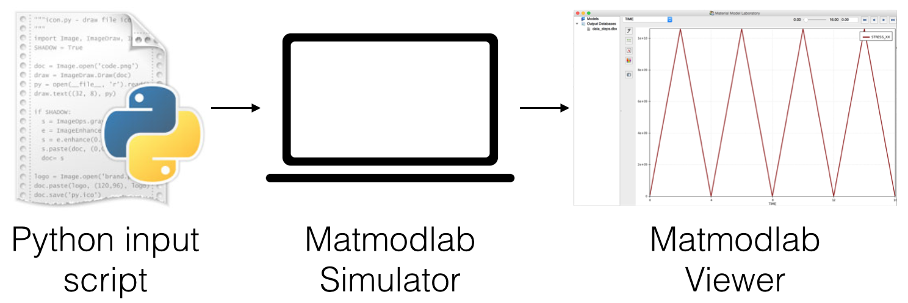

2.1. Job Execution: Overview¶
Overview¶

An analysis in Matmodlab is defined by an input script, which
- is a Python script that imports the Matmodlab namespace; and
- defines a
MaterialPointSimulatorobject.
Once defined, the input script is executed with the mml run procedure and results viewed with the mml view procedure.
The Input Script¶
Most input scripts have the same basic layout:
Import the Matmodlab namespace:
from matmodlab import *
Instantiate the
MaterialPointSimulator:mps = MaterialPointSimulator('jobname')
Define the simulation steps. For example, a single step of uniaxial strain:
mps.StrainStep(components=(1, 0, 0))
Define the material model. For example, a linear elastic material:
mps.Material('elastic', {'K': 10, 'G': 8})
Run the job:
mps.run()
Executing the Input Script¶
Once written, the input script is executed by the mml run procedure:
$ mml run
Viewing the Results¶
Once executed, the model results are viewed with mml view procedure:
$ mml view